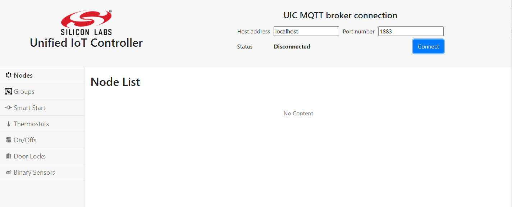
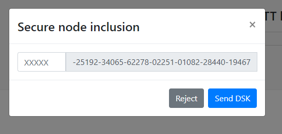
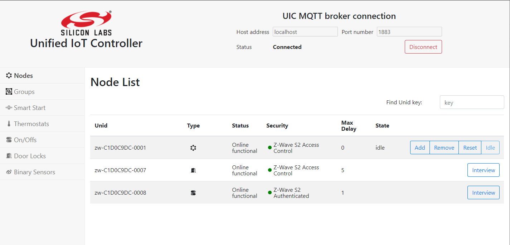
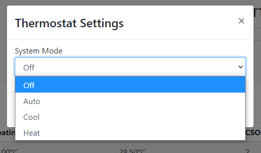

The Unify SDK Developer GUI is a Web service that runs on the UIC gateway. It provides a graphical interface to operate the various features of the UIC gateway, such as network management, smartstart, multicast, and so on.
Access Developer GUI
The developer GUI (Dev GUI) can be accessed via any browser that can reach the UIC gateway over TCP/IP. Enter the hostname or IP address of the target running UIC and port 3000, which is the default port for Dev GUI. This process is shown in the image below where the hostname of a Raspberry is raspberrypi.local:
In addition to port 3000, the Dev GUI also depends on port 1337, which has to be accessible on the target running the UIC.

After entering the URL, you should see this front page:

Connecting the Developer GUI
Click connect in the top bar to start operating the UIC. Because of the modular nature of the developer GUI, you can connect it to other UIC's. In most cases, you want to connect to the actual UIC that the developer UI is running on, therefore leaving it on localhost.
After clicking connect, check that the status says Connected and, after this, the page will still be blank. Then, click on the navigation bar on the left saying Nodes. At that point, the page should look like this:

Node Inclusion
After connecting you should be able to see current running the protocol controllers in the nodes list, as shown in the image above. You can do a normal node inclusion by pressing Add on the table for the PC. This will set the PC in inclusion mode. After activating inclusion mode on the end device, a secure inclusion window may pop up depending on the security capabilities of the device:

For secure inclusion, input the first five digits of the DSK key. For unsecure inclusion, click Reject. Following is an example of a nodelist, where different security schemes are displayed:

SmartStart List
The SmartStart list enables including devices easily. A page of the smart start list enables editing and inputting DSK keys of devices. When a device starts up or resets, it will automatically get included. A SmartStart entry and inclusion may look like this:

After filling in the DSK key and checking include, click save. If the UIC UPVL is running, it will be saved to the SmartStart list.
Devices
The following are the currently (2021-04-28) supported devices of the Dev GUI:
- On/Off switch
- Binary sensor
- Door lock
- Thermostat
On/Off Switch
After inclusion of an On/Off switch and navigating to the switches page, the page will look something like this:

This can control an On/Off switch.
Binary Sensor
After including a Binary sensor, a page will look like this:

Door Lock
The door lock requires secure inclusion to work. The page will look like this:

When unlocking or locking the door lock, a pop up will ask for a pin to the door lock:

Thermostat
The thermostat can change mode and change set point temperatures.

Groups
The Groups pane allows the user to create groups of endpoint devices. Groups may be used if you have a devices that support the same Commands, that you want to control as groups. A common use case for this is light bulbs or binary switches.

Create Group
Groups are created by pressing the Create Group button. The following image shows how to create a group with four binary switches.

After clicking Save, the groups page will look like following:

Sending Command to Group
Click the Run Command button to open the Send Group Command pop-up, which looks like following.

This enables selecting the command you want to send to the group. Clicking Send will issue the command. In the above example, it will turn all the binary switches in the group off.